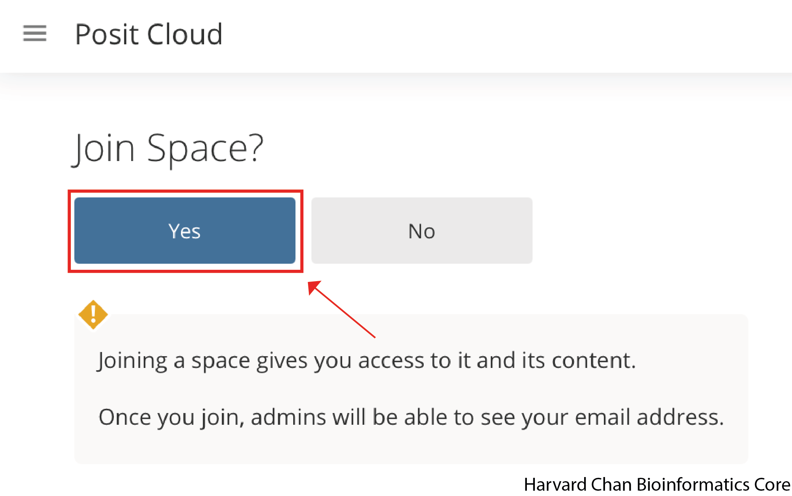
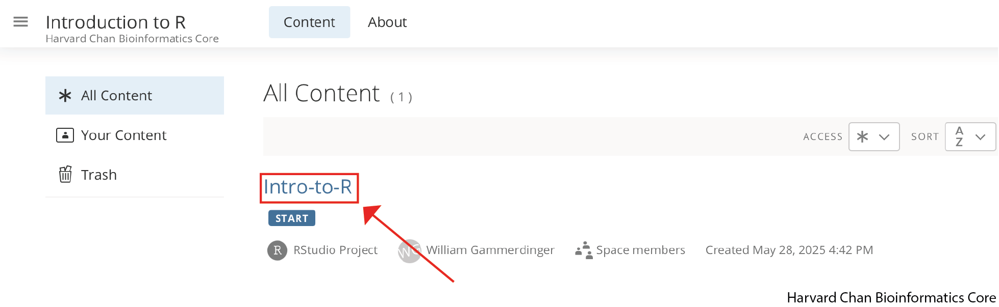
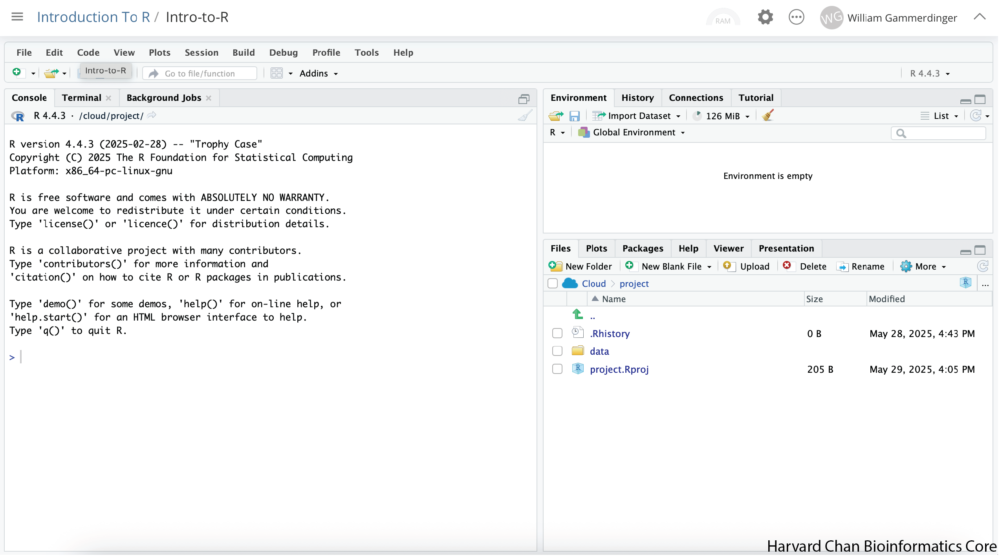
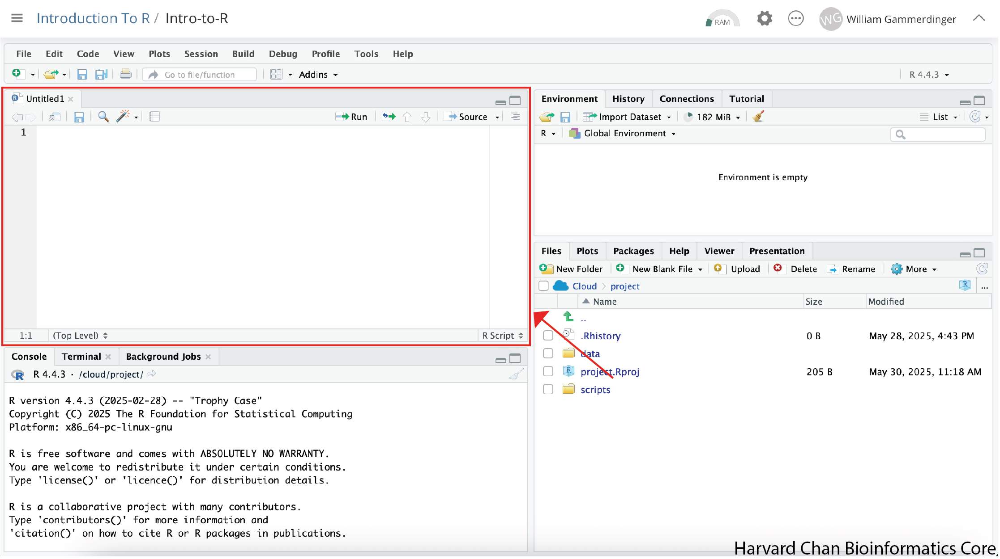
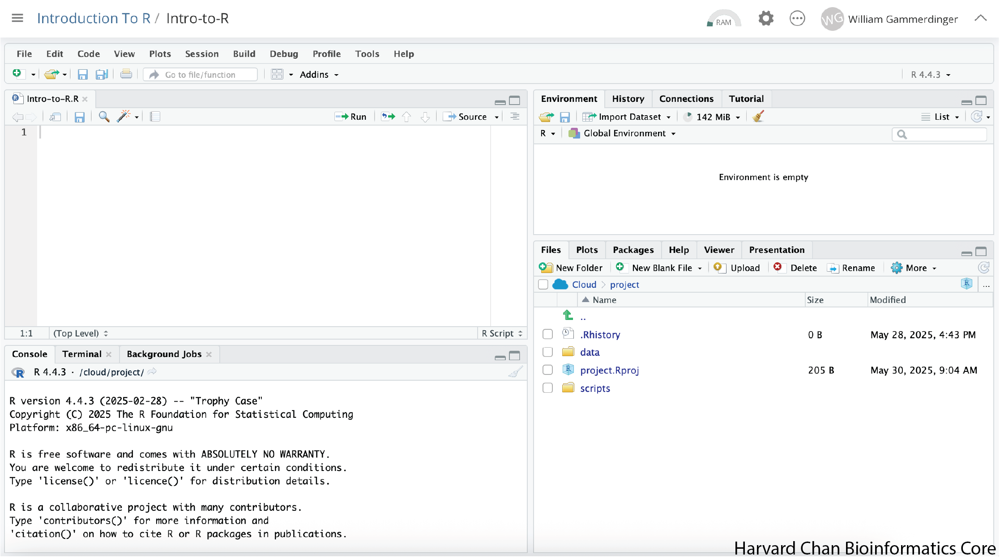
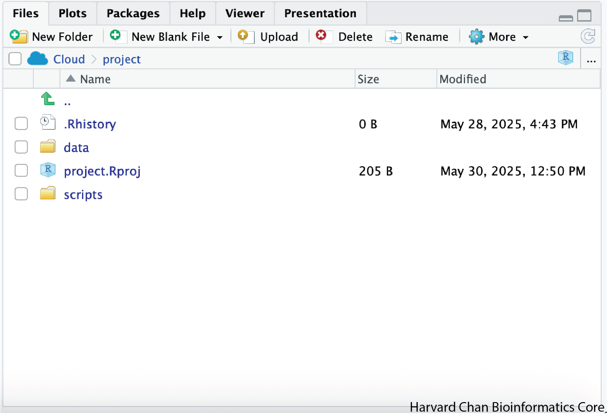
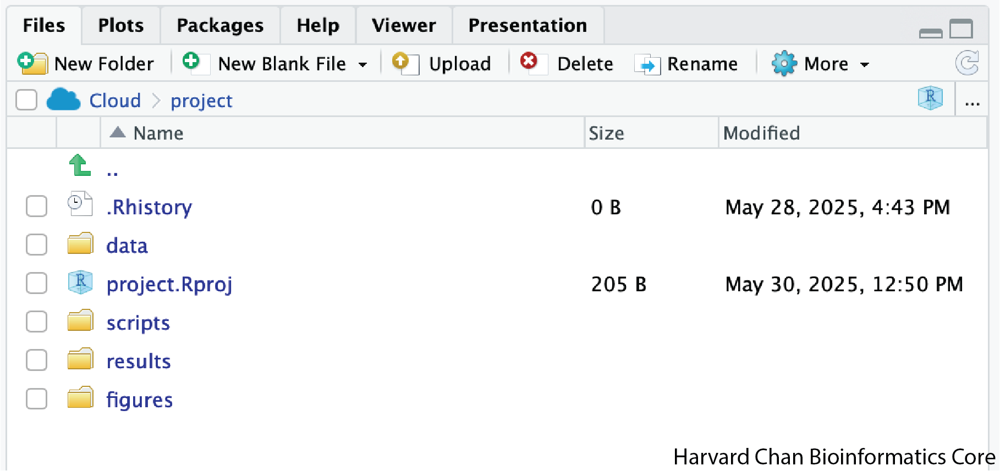

getwd()Introduction to R and RStudio
R basics
Data science foundations
This lesson introduces participants to the R programming environment and the RStudio interface. Participants will learn how to navigate RStudio, create and manage R projects, work with scripts, use the console and understand core R concepts such as variables, functions and the assignment operator. The lesson also guides participants through organizing project directories, interacting with data and adopting recommended practices for reproducible workflows in R.
Keywords
R, RStudio, Data analysis
Approximate time: 30 minutes
Learning Objectives
- Describe what R and RStudio are
- Interact with R using RStudio
- Familiarize various components of RStudio
- Employ variables in R
What is R?
The common misconception is that R is a programming language but in fact it is much more than that. Think of R as an environment for statistical computing and graphics, which brings together a number of features to provide powerful functionality.
The R environment combines:
- Effective handling of big data
- Collection of integrated tools
- Graphical facilities
- Simple and effective programming language
Why use R?

R is a powerful, extensible environment. It has a wide range of statistics and general data analysis and visualization capabilities.
- Data handling, wrangling, and storage
- Wide array of statistical methods and graphical techniques available
- Easy to install on any platform and use (and it’s free!)
- Open source with a large and growing community of peers
Examples of R used in the media and science
- “At the BBC data team, we have developed an R package and an R cookbook to make the process of creating publication-ready graphics in our in-house style…” - BBC Visual and Data Journalism cookbook for R graphics
- “R package of data and code behind the stories and interactives at FiveThirtyEight.com, a data-driven journalism website founded by Nate Silver (initially began as a polling aggregation site, but now covers politics, sports, science and pop culture) and owned by ESPN…” - fivethirtyeight Package
- Single Cell RNA-seq Data analysis with Seurat
What is RStudio?
RStudio is freely available open-source Integrated Development Environment (IDE). RStudio provides an environment with many features to make using R easier and is a great alternative to working on R in the terminal.

- Graphical user interface, not just a command prompt
- Great learning tool
- Free for academic use
- Platform agnostic
- Open source
Create a new project directory in RStudio
Let’s create a new project directory for our “Introduction to R” lesson today.
- Open RStudio
- Go to the
Filemenu and selectNew Project. - In the
New Projectwindow, chooseNew Directory. Then, chooseNew Project. Name your new directoryIntro-to-Rand then “Create the project as subdirectory of:” the Desktop (or location of your choice). - Click on
Create Project.

- After your project is completed, if the project does not automatically open in RStudio, then go to the
Filemenu, selectOpen Project, and chooseIntro-to-R.Rproj. - When RStudio opens, you will see three panels in the window.
- Go to the
Filemenu and selectNew File, and selectR Script. - Go to the
Filemenu and selectSave As..., typeIntro-to-R.Rand selectSave

The RStudio interface should now look like the screenshot below.

What is a project in RStudio?
It is simply a directory that contains everything related your analyses for a specific project. RStudio projects are useful when you are working on context- specific analyses and you wish to keep them separate. When creating a project in RStudio you associate it with a working directory of your choice (either an existing one, or a new one). A . RProj file is created within that directory and that keeps track of your command history and variables in the environment. The . RProj file can be used to open the project in its current state but at a later date.
When a project is (re) opened within RStudio the following actions are taken:
- A new R session (process) is started
- The .RData file in the project’s main directory is loaded, populating the environment with any objects that were present when the project was closed.
- The .Rhistory file in the project’s main directory is loaded into the RStudio History pane (and used for Console Up/Down arrow command history).
- The current working directory is set to the project directory.
- Previously edited source documents are restored into editor tabs
- Other RStudio settings (e.g. active tabs, splitter positions, etc.) are restored to where they were the last time the project was closed.
Information adapted from RStudio Support Site
Adding directories
In order to add a directory, or folder, within your RStudio project, you can click the “Create a new folder” button at the top-left of the Files/Plots/Packages/Help window. It looks like a folder with a plus sign on top of it. Let’s name the directory scripts and click “OK”.
Next, we are going to add the data directory:
- This directory can be downloaded from here. Right-click on this link and select “Save Link As…”.
- Navigate to your RStudio project and save the file.
- Go to the file in your file browser and double-click on the
data.zipfile to uncompress it.
Note
Windows users will need to check that within the data folder, there isn’t a second data directory within the data directory. If there is, bring the nested data directory out of the data directory and place it directly within your RStudio project.
What is Posit Cloud?
Posit is the open-source data science company who manages RStudio. While many R users download Rstudio to run their analyses locally, Posit offers a service called Posit Cloud which allows users to carry out their analyses in the cloud. There are advantages to this model including:
- Your analyses are available from any computer in the world
- Sharing Rstudio projects can be easier
However, there are restrictions on the free accounts that come from Posit Cloud including:
- Maximum of 25 projects
- 25 compute hours per month
- 1GB maximum of RAM
Why are we using Posit Cloud?
Given the restrictions on compute time and RAM, you might wonder why we are teaching you R using Posit Cloud? And the answer is that Posit Cloud offers a great environment for teaching from and all of the principles that we learn using R and RStudio on Posit Cloud will apply to your local installation of R and RStudio as well. Some of these benefits include:
- Shared operating system for package installations
- Shared versions of R and packages
- Allows instructors to take control of your RStudio environment to help troubleshoot issues
- Can pre-load data to analyze
Our recommendation is for you to familiarize yourself with R and RStudio in this workshop in a common shared environment on Posit Cloud and then take these skills with you and implement them on your own analyses on a local installation of R and RStudio.
Entering the Introduction to R Workspace on Posit Cloud
Before you are able to use Posit Cloud, you will need to make a free account on Posit by following this link if you have not done so already. Once you have made an account on Posit Cloud, the instructors for the workshop will have shared a link with you to join the Introduction to R workspace hosted by the Harvard Chan Bioinformatics Core or you can click this link. This will take you to a webpage that looks like this:

Once you hit the “Join” Button and it will take you to a webpage that looks like the one below:

You have now joined the Harvard Chan Bioinformatics Core’s Introduction to R workspace on Posit Cloud.
Overview of Posit Cloud Workspaces
In the left-hand panel you should see a section called “Spaces”. Within it you should see three options:
Your Workspace - This is where you can use Posit Cloud’s resources in accordance with your account’s limits. If it is the free account then it would be 25 compute hours per month and 1GB of RAM.
Introduction to R - This is the Harvard Chan Bioinformatics Core’s Workspace and we set the compute limits. This workspace is only to be used for the workshop and not personal use outside of the workshop.
+ New Space - This is what you can use to create a new workspace that is tied to your personal account limits.
Select the Introduction to R workspace. This will be the workspace that we will be working within for this workshop.

What is a project in RStudio?
It is simply a directory (or folder) that contains everything related your analyses for a specific project. RStudio projects are useful when you are working on context-specific analyses and you wish to keep them separate. When creating a project in RStudio you associate it with a working directory of your choice (either an existing one, or a new one). A . RProj file is created within that directory and that keeps track of your command history and variables in the environment. The . RProj file can be used to open the project in its current state but at a later date.
When a project is (re)opened within RStudio the following actions are taken:
- A new R session (process) is started
- The .RData file in the project’s main directory is loaded, populating the environment with any objects that were present when the project was closed.
- The .Rhistory file in the project’s main directory is loaded into the RStudio History pane (and used for Console Up/Down arrow command history).
- The current working directory is set to the project directory.
- Previously edited source documents are restored into editor tabs
- Other RStudio settings (e.g. active tabs, splitter positions, etc.) are restored to where they were the last time the project was closed.
Information adapted from RStudio Support Site
Starting a Project on Posit Cloud
We have already begun setting up the project for you and you should see a project called “Intro-to-R” within the Introduction to R workspace:

Note
Once you have opened the “Intro-to-R” on Posit Cloud for the first time, it will make a derived duplicate of the project that you are working on in our Introduction to R Workspace. In the future, you can click on either R project to come back to the point where you left off.
The RStudio interface should now look like this:

Next, we are going to create an Rscript to keep a record of our work, but first we will implement good data management practices and create a folder to hold this script. In the bottom-right panel there should be a button that has a folder with a green plus on it and says “New Folder”, click this button:

Note
Depending on the size of your window, the “New Folder” button may just have the icon or the icon and the word “Folder”.
A window should pop-up prompting you to provide a name for the folder. Type “scripts” into the text box and click “OK”:

Now in the bottom-left panel, you will see a “scripts” folder.
Next, we will create the Rscript that we will write our code in. In order to create an Rscript, click on the “File” menu option in the top-left, then “New File” and then select “R Script”.

This will create an R Script as the top panel on the left side of your RStudio window.

Before we go any further, let’s save our new R Script by following the steps listed below:
- Click on the “File” menu option in the top-left and find “Save As…”.
- You will see a finder window pop-up showng you working directory. Click the “scripts” folder.
- Let’s name our R Script as “Intro-to-R.R” in the text field and click on the “Save” button
Now our RStudio window should look like this:

RStudio Interface
The RStudio interface has four main panels:
- Console: This is where you can type commands and see output. The console is all you would see if you ran R in the command line without RStudio.
- Script editor: This is where you can type out commands and save to file. You can also submit the commands to run in the console.
- Environment/History: Environment shows all active objects and history keeps track of all commands run in console
- Files/Plots/Packages/Help: “Files” shows a file browser and “Plots” will populate when you create a plot. “Packages” will help you manage packages from CRAN and Bioconductor. “Help” holds manuals to the functions within R.
Organizing your working directory & setting up
Viewing your working directory
Before we organize our working directory, let’s check to see where our current working directory is located by typing into the console:
Your working directory should be the folder where the R project is located on your computer. The working directory is where RStudio will automatically look for any files you bring in and where it will automatically save any files you create, unless otherwise specified.
You can visualize your working directory by selecting the Files tab from the Files/Plots/Packages/Help window.

If you wanted to choose a different directory to be your working directory, you could navigate to a different folder in the Files tab, then, click on the More dropdown menu which appears as a Cog and select Set As Working Directory.

To organize your working directory for a particular analysis, you should separate the original data (raw data) from intermediate datasets. For instance, you may want to create a data/ directory within your working directory that stores the raw data, a scripts/ directory for your R scripts, a results/ directory for intermediate datasets and a figures/ directory for the plots you will generate.
We have provided you with R project containing the data/ directory and we made our scripts/ directory together. For this exercise create the results/ and figures/ directories.
When finished, your working directory should look like this:

Setting up
This is more of a housekeeping task. We will be writing long lines of code in our script editor and want to make sure that the lines “wrap” and you don’t have to scroll back and forth to look at your long line of code.
Click on “Code” at the top of your RStudio screen and left-click “Soft Wrap Long Lines” in the pull down menu.

Interacting with R
Now that we have our interface and directory structure set up, let’s start playing with R! There are two main ways of interacting with R in RStudio: using the console or by using script editor (plain text files that contain your code).
Console window
The console window (in RStudio, the bottom left panel) is the place where R is waiting for you to tell it what to do, and where it will show the results of a command. You can type commands directly into the console, but they will be forgotten when you close the session.
Let’s test it out:
3 + 5[1] 8Script editor
A better practice is to enter the commands in the script editor and save the script. You are encouraged to comment liberally to describe the commands you are running using #. This way, you have a complete record of what you did, you can easily show others how you did it and you can do it again later on if needed.
The Rstudio script editor allows you to ‘send’ the current line or the currently highlighted text to the R console by clicking on the Run button in the upper-right hand corner of the script editor.
Now let’s try entering commands to the script editor and using the comments character # to add descriptions and highlighting the text to run:
# Intro to R Lesson
# July 7th, 2025
# Interacting with R
# Add 3 and 5
3 + 5[1] 8
Alternatively, you can send code to the console from the script editor to be run by pressing the Ctrl and Return/Enter keys at the same time as a shortcut.

You should see the command run in the console and output the result.

What happens if we do that same command without the comment symbol #? Re-run the command after removing the # sign in the front:
Add 3 and 5
3 + 5Error in parse(text = input): <text>:1:5: unexpected numeric constant
1: Add 3
^Now R is trying to run that sentence as a command, and it doesn’t work. We get an error in the console.
This means that the R interpreter did not know what to do with that command. Reintroduce the # to re-comment the appropriate line.
Console command prompt
Interpreting the command prompt can help understand when R is ready to accept commands. Below lists the different states of the command prompt and how you can exit a command:
Console is ready to accept commands: >.
If R is ready to accept commands, the R console shows a > prompt.
When the console receives a command (by directly typing into the console or running from the script editor (Ctrl-Enter), R will try to execute it.
After running, the console will show the results and come back with a new > prompt to wait for new commands.
Console is waiting for you to enter more data: +.
If R is still waiting for you to enter more data because it isn’t complete yet, the console will show a + prompt. It means that you haven’t finished entering a complete command. Often this can be due to you having not ‘closed’ a parenthesis or quotation.
Escaping a command and getting a new prompt: ESC
If you’re in Rstudio and you can’t figure out why your command isn’t running, you can click inside the console window and press ESC to escape the command and bring back a new prompt >.
Keyboard shortcuts in RStudio
In addition to some of the shortcuts described earlier in this lesson, we have listed a few more that can be helpful as you work in RStudio.
| key | action |
|---|---|
| Ctrl+Enter | Run command from the script editor in the console |
| ESC | Escape the current command to return to the command prompt |
| Ctrl+1 | Move cursor from console to script editor |
| Ctrl+2 | Move cursor from script editor to console |
| Tab | Use this key to complete a file path |
| Ctrl+Shift+C | Comment the block of highlighted text |
Try highlighting only 3 + from your script editor and running it. Find a way to bring back the command prompt > in the console.
The R syntax
Now that we know how to talk with R via the script editor or the console, we want to use R for something more than adding numbers. To do this, we need to know more about the R syntax.
The main “parts of speech” in R (syntax) include:
- the comments (
#) and how they are used to document content - variables and functions
- the assignment operator
<- - the
=for arguments in functions
NOTE: Indentation and consistency in spacing is used to improve clarity and legibility
We will go through each of these “parts of speech” in more detail, starting with the assignment operator.
Assignment operator
To do useful and interesting things in R, we need to assign values to variables using the assignment operator, <-. For example, we can use the assignment operator to assign the value of 3 to x by executing:
# Assign the value of 3 to the object called x
x <- 3The assignment operator (<-) assigns values on the right to variables on the left.
In RStudio, typing <- in a single keystroke.
Variables
A variable is a symbolic name for (or reference to) information. Variables in computer programming are analogous to “buckets”, where information can be maintained and referenced. On the outside of the bucket is a name. When referring to the bucket, we use the name of the bucket, not the data stored in the bucket.
In the example above, we created a variable or a “bucket” called x. Inside we put a value, 3.
Let’s create another variable called y and give it a value of 5.
# Assign the value of 5 to the object called y
y <- 5When assigning a value to an variable, R does not print anything to the console. You can force it to print the value by using parentheses or by typing the variable name.
# Print the object y
y[1] 5You can also view information on the variable by looking in your Environment window in the upper right-hand corner of the RStudio interface.

Now we can reference these buckets by name to perform mathematical operations on the values contained within. What do you get in the console for the following operation:
# Add x and y
x + y[1] 8Try assigning the results of this operation to another variable called number.
# Add x and y and assign their sum to the object called number
number <- x + yTry changing the value of the variable x to 5. What happens to number?
Now try changing the value of variable y to contain the value 10. What do you need to do, to update the variable number?
Tips on variable names
Variables can be given almost any name, such as x, current_temperature, or subject_id. However, there are some rules / suggestions you should keep in mind:
- Make your names explicit and not too long.
- Avoid names starting with a number (
2xis not valid butx2is) - Avoid names of fundamental functions in R (e.g.,
if,else,for, see here for a complete list). In general, even if it’s allowed, it’s best to not use other function names (e.g.,c,T,mean,data) as variable names. When in doubt, you can check the “Help” tab to see if the name is already in use. - Avoid dots (
.) within a variable name, as inmy.dataset. There are many functions in R with dots in their names for historical reasons, but because dots have a special meaning in R (for methods) and other programming languages, it’s best to avoid them. - Use nouns for object names and verbs for function names
- Keep in mind that R is case sensitive (e.g.,
genome_lengthis different fromGenome_length) - Be consistent with the styling of your code (where you put spaces, how you name variable, etc.). In R, two popular style guides are Hadley Wickham’s style guide and Google’s.
Interacting with data in R
R is commonly used for handling big data, and so it only makes sense that we learn about R in the context of some kind of relevant data. Let’s take a few minutes to familiarize ourselves with the data.
Visualizing the provided files
You can access the files we need for this workshop by clicking on the data/ directory within the “Files” tab. Within here, you should find the four files that we will be working with.

Note
If you wanted to add files onto the Posit Cloud server you could do this with the “Upload” button in the “Files” tab.
The dataset
In this example dataset, we have collected whole brain samples from 12 mice and want to evaluate expression differences between them. The expression data represents normalized count data obtained from RNA-sequencing of the 12 brain samples. This data is stored in a comma separated values (CSV) file as a 2-dimensional matrix, with each row corresponding to a gene and each column corresponding to a sample.

The metadata
We have another file in which we identify information about the data or metadata. Our metadata is also stored in a CSV file. In this file, each row corresponds to a sample and each column contains some information about each sample.
The first column contains the row names, and note that these are identical to the column names in our expression data file above (albeit, in a slightly different order). The next few columns contain information about our samples that allow us to categorize them. For example, the second column contains genotype information for each sample. Each sample is classified in one of two categories: Wt (wild type) or KO (knockout). What types of categories do you observe in the remaining columns?

R is particularly good at handling this type of categorical data. Rather than simply storing this information as text, the data ican be represented in a specific data structure which allows the user to sort and manipulate the data in a quick and efficient manner. We will discuss this in more detail as we go through the different lessons in R!
The functional analysis results
We will be using the results from a functional analysis to learn about packages/functions from the Tidyverse suite of integrated packages. These packages are designed to work together to make common data science operations, like data wrangling, tidying, reading/writing, parsing and visualizing, more user-friendly.
Additional datasets
There are a handful of additional data sets within the data directory that we will use during this workshop as toy data sets. Some of the datasets are only used as toy data sets in optional lessons.
Recommended practices
Before we move on to more complex concepts and getting familiar with the language, we want to point out a few things about recommended practices when working with R, which will help you stay organized in the long run:
- Code and workflows are more reproducible if we can document everything that we do. Our end goal is not just to “do stuff”, but to do it in a way that anyone can easily and exactly replicate our workflow and results. All code should be written in the script editor and saved to file, rather than working in the console.
- The R console should be mainly used to inspect objects, test a function or get help.
- Use
#signs to comment. Comment liberally in your R scripts. This will help future you and other collaborators know what each line of code (or code block) was meant to do. Anything to the right of a#is ignored by R. A shortcut for this is Ctrl+Shift+C if you want to comment an entire chunk of text.
Reuse
CC-BY-4.0